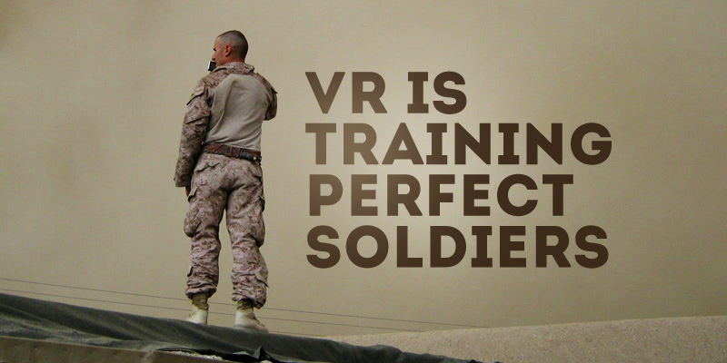

Overview
This project will consist of developing various complex VR hardware to create various SWAT application scenarios provided across all special police enforcement for various personnel
to practice and perfect their skills and a realistic and safe environment. This would be designed for SWAT personnel to encourage teamwork, usage of current standardised SWAT equipment and
efficient completion of a task as special tasks forces are heavily reliant on teamwork and strategic planning. Such task can include, hostage/counter terrorism and negoiation scenarios within
the urban environment which would be all simulated through VR.
Why Should we implement this?
The project can be easily utilised by law enforcement due to the many possibilities VR can provide. From various countries, such as the United States,
the ease of access to high grade weaponry to threats such as school shootings puts not only civilians, but also police officers at risk. There are increasingly frequent
encounters with violent people with automatic weapons, explosives and body armour. Current training events would occur in prebuilt urban (empty buildings) construction designed in such
a way where SWAT teams are able to utilise their communication and teamwork skills to execute a task. With more realistic training devices, (VR simulation), it can provide police officers
familiarities with certain real life scenarios in order to reduce any casualties. The usage of these training courses are often reptitive and most imporantly, adds no “real” or variety in actual
counter terrorism scenarios. The development of VR’s “realism” is able to not only provide a realistic setting within certain structures, but also a change in different types of environments to
fully maximise personnel’s knowledge. Overall this could protect not only officers themselves, but also civilians.
Description
The features for this simulation will provide, as mentioned previously, an all urban environment scenario to heavily relate to the needs of special law enforcement such as various SWAT entries
methods and providing various building layouts. For example, the instructor is able to change the scenario to a hostage situation and choose a specific urban environment such as a plane.
VR communication equipment consists of realistic militarised helmets that are attached with a VR headset, headphones and a microphone that would provide effective communication to personnel from negotiators,
rifleman or entry team. SWAT personnel using the VR would be equipped with VR military weapons closely designed in weight and size to the real-weapons and a VR haptic feedback suit to monitor other aspects of
current states such as heart rate. To breach doors quickly equipment would also include VR life like battering rams,
shotguns with breaching rounds, or explosive charges to simulate a break in lock or hinges, doors, walls or windows for entry.
All of these VR devices are connected wirelessly to the home system where the instructor is able to monitor and listen to all personnel callouts and their physical state (heart rate).
The instructor is able to use a mic to communicate to every personnel for feedback or positioning, especially for those in an entry role of the SWAT team.
Tools and Technologies
For this project to function, hardware would consist of a high performance VR workstation generator and monitoring system.
Within this system, the hardware should provide 1000s of real life training scenarios and monitor individuals behavior such as heart rate to provide
full analytics on their performance. This project will also include multiple VR headsets, a feedback suit and various VR kits and tools depending on the
simulation needed. The VR headset would be integrated within standardised military police equipment (helmets, microphone) to further The software required
for this would be using open source tools such as unity 3D/Unreal Engine to create real life urban environments. To further enhance the VR experience, another
software application required would be 3DS max & maya or Blender to render, model or animate various props. Finally a WebVR browser to provide the headset with
support within certain browsers.
Skill Requirements
The skills needed for this project to work would be various types of set knowledge and skills ranging from software programming,
3D design skills, video/sound production to UI/UX. For programming, It’s a requirement to have the fundamental knowledge of coding from C#,
WebVR, UnityScript or Javascript. For VR to run, there would also need to be basic knowledge of running platform specific software development
kits to develop the necessary software. As previously mentioned, the various VR hardware needed can be easily bought/modified which is costly.
The development skills needed would be easily obtained through either hiring a professional within a particular field or self-taught.